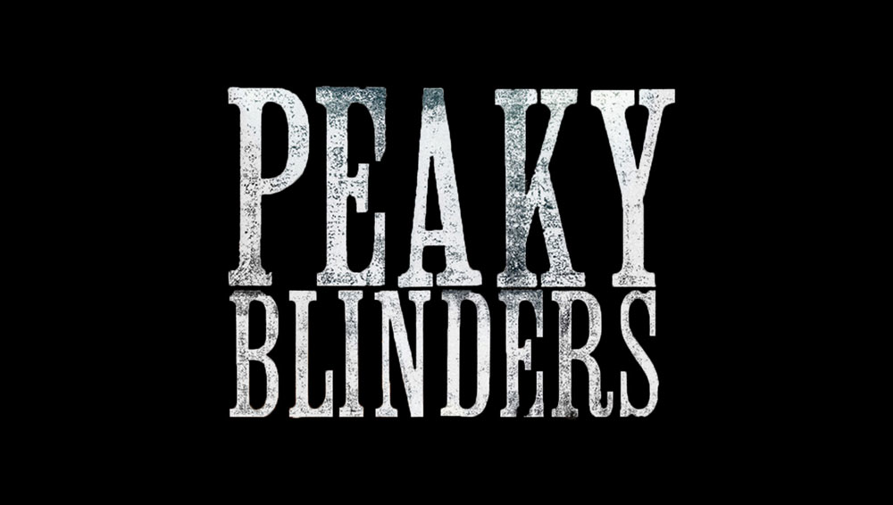

Peaky Blinders
Peaky Blinders é uma série de televisão britânica de drama criada por Steven Knight. Situado em Birmingham, na Inglaterra, segue as façanhas da gangue criminosa Peaky Blinders logo após a Primeira Guerra Mundial. A gangue fictícia é vagamente baseada em uma gangue de jovens urbanas reais de mesmo nome que esteve ativa na cidade de 1890 a 1910.
Ela apresenta um elenco liderado por Cillian Murphy, estrelando como Tommy Shelby, Helen McCrory como Elizabeth "Polly" Gray, Paul Anderson como Arthur Shelby e Joe Cole como John Shelby, os membros mais antigos da gangue. Tom Hardy, Sam Neill, Annabelle Wallis, Iddo Goldberg, Charlotte Riley, Paddy Considine, Adrien Brody, Aidan Gillen, Anya Taylor-Joy, Sam Claflin, James Frecheville e Stephen Graham têm papéis recorrentes. A série estreou em 12 de setembro de 2013, transmitido na BBC Two até a quarta temporada (com repetições na BBC Four), depois mudou-se para a BBC One para a quinta e sexta temporada.
A quinta temporada estreou na BBC One em 25 de agosto de 2019 e terminou em 22 de setembro de 2019. A Netflix, sob um acordo com a Weinstein Company e a Endemol, adquiriu os direitos de lançamento da série nos Estados Unidos e em todo o mundo. Em janeiro de 2021, foi anunciado que a sexta temporada seria a última, seguida por um filme derivado. A sexta temporada estreou com aclamação da crítica em 27 de fevereiro de 2022 e foi concluída em 3 de abril de 2022.

Logotipo série Peaky Blinders
Enredo
Os Peaky Blinders são uma organização criminosa de origem cigana que se passa na cidade de Birmingham, Inglaterra, em 1919, formada vários meses após o final da Primeira Guerra Mundial (1914–1918). A história é centrada na ambição do líder da gangue inglesa, Thomas "Tommy" Shelby (Cillian Murphy). A gangue chama a atenção do major irlandês, Chester Campbell (Sam Neill), um inspetor-chefe de polícia do Royal Irish Constabulary (RIC) de Belfast, Irlanda do Norte, enviado por Winston Churchill, sendo contratado para limpar a cidade do Exército Republicano Irlandês (IRA) (1919–1922), comunistas, gangues e criminosos comuns. Churchill ordenou Campbell eliminar as desordens e rebeliões em Birmingham, visando recuperar um esconderijo roubado de armas que deveria ser enviado para a Líbia Italiana (1934–1943).
Em 1921, a família Shelby expande sua organização criminosa no "Sul e Norte, mantendo uma fortaleza no coração de Birmingham."Em 1924, Tommy e sua família entram em situações mais perigosas à medida que os negócios se expandem novamente, envolvendo também organizações anticomunistas. Após ter que lidar com a greve geral no Reino Unido (1926) e disputas com a máfia ítalo-americana, Tommy torna-se membro do Parlamento Inglês em 1927. Dois anos depois, durante a Quinta-Feira Negra (1929) — precedendo posteriormente a Grande Depressão, a trama inicia-se com uma manifestação liderada pelo líder fascista inglês, Oswald Mosley.
Elenco
Elenco Principal
Cillian Murphy como Thomas 'Tommy' Shelby: o líder geral dos Peaky Blinders.
Sam Neill como Chester Campbell (1ª-2ª temporadas): um major irlandês que foi enviado de Belfast.
Helen McCrory como Polly (Elizabeth) Gray, nascida Shelby: a tia de Tommy e seus irmãos e tesoureira dos Peaky Blinders.
Paul Anderson como Arthur Shelby, Jnr.: o irmão mais velho dos Shelbys.
Annabelle Wallis como Grace Shelby, nascida Burgess (1º-3º temporada): uma ex-agente Irlandesa disfarçada. Primeira esposa de Thomas Shelby e mãe de seu filho Charles.
Sophie Rundle como Ada Thorne, nascida Shelby: a única irmã dos Shelby's.
Joe Cole como John Shelby (1ª-4ª temporadas): o terceiro irmão dos Peaky Blinders.
Iddo Goldberg como Freddie Thorne (1ª temporada): um comunista conhecido que lutou na Grande Guerra; marido de Ada Shelby.
Charlie Creed-Miles como Billy Kimber (1ª temporada): um chefão local que administra as corridas.
Benjamin Zephaniah como Jeremiah: um pregador e amigo dos Peaky Blinders.
Andy Nyman (1ª temporada), Richard McCabe (2ª temporada) e Neil Maskell (5ª temporada) como Winston Churchill.
Tommy Flanagan como Arthur Shelby, Sr. (1ª temporada): o pai de Tommy e seus irmãos e irmão de Polly.
Tom Hardy como Alfie Solomons (2ª temporada-presente): O líder de uma gangue judaica, em Camden Town.
Noah Taylor como Darby Sabini (2ª temporada): O líder de uma gangue italiana em Camden Town.
Charlotte Riley como May Carleton: uma viúva rica que possui cavalos de corrida.
Aimee-Ffion Edwards como Esme Shelby, nascida Lee: esposa de John Shelby.
Finn Cole como Michael Gray (2ª temporada-presente): o filho biológico de Polly Gray.
Natasha O'Keeffe como Lizzie Shelby, nascida Stark: uma ex-prostituta que trabalha para Tommy como sua secretária. Ela é a segunda esposa de Tommy e mãe da sua filha Ruby.
Packy Lee como Johnny Dogs: um amigo cigano de Tommy Shelby.
Ned Dennehy como Charlie Strong: Dono de um estaleiro naval e figura de um tio para Tommy.
Ian Peck como Curly: assistente de Charlie Strong e especialista em cavalos.
Paddy Considine como Padre John Hughes (3ª temporada): Um padre trabalhando com a Seção D (Liga Econômica) no governo britânico.
Alexander Siddig como Ruben Oliver (3ª temporada): um artista de em relacionamento amoroso com Polly Gray
Gaite Jansen como a Princesa Tatiana Petrovna (3ª temporada): uma princesa russa.
Jan Bijvoet como Grão-Duque Leon Petrovich Romanov (3ª temporada): o marido da grã-duquesa Izabella.
Dina Korzun como Grã-Duquesa Izabella Petrovna (3ª temporada): tia da princesa Tatiana.
Aidan Gillen como Aberama Gold (4ª-5ª temporada): um aliado da família Shelby e amante de Polly Gray.
Adrien Brody como Luca Changretta (4ª temporada): um mafioso de Nova Iorque com uma vingança contra a família Shelby.
Kate Phillips como Linda Shelby (4ª-5ª temporada): esposa cristã de Arthur Shelby.
Charlie Murphy como Jessie Eden (4ª-5ª temporada): uma coordenadora sindical e amante de Tommy.
Jack Rowan (4ª-5ª temporada) como Bonnie Gold: o filho lutador de boxe de Aberama Gold.
Alfie Evans-Meese (1ª temporada) e Harry Kirton como Finn Shelby (2ª temporada-presente): o irmão mais novo dos Shelbys e membro da gangue.
George Gwyther (3ª temporada) e Callum Booth-Ford (5ª temporada) como Karl Thorne: o único filho de Ada e Freddie.
Jordan Bolger (2ª-4ª temporada) e Daryl McCormack (5ª temporada) como Isaiah Jesus: filho de Jeremias e membro dos Peaky Blinders.
Sam Clafin como Oswald Mosley (5ª temporada): um político fascista.
Anya Taylor-Joy como Gina Gray (5ª temporada): esposa norte-americana de Michael.
Kingsley Ben-Adir como Coronel Ben Younger (5ª temporada): um jovem coronel que investiga atividades políticasentre comunistas e fascistas. Possuía uma relação com Ada Thorne.
Brian Gleeson como Jimmy McCavern (5ª temporada): líder dos Billy Boys, uma gangue protestante escocesa.
Cosmo Jarvis como Barney (5ª temporada): um combatente da Grande Guerra que foi internado em um manicômio.
Andrew Koji como Briliant Chang (5ª temporada): um criminoso chinês envolvido com ópio.
Elenco Recorrente
Samuel Edward-Cook como Danny "Whizz-Bang" Owen (1ª temporada): um ex-amigo de Tommy que lutou na Grande Guerra.
Tony Pitts como sargento/inspetor Moss (1ª temporada-4ª temporada): um policial de Birmingham.
Kevin Metcalfe como Scudboat (1ª temporada): um escudeiro da gangue.
Neil Bell como Harry Fenton (1ª temporada): o antigo proprietário do Pub Garrison.
Lobo Chan como Mr Zhang (1ª temporada): um empresário chinês.
Tom Vaughan-Lawlor como Malacki Byrne (1ª temporada): um membro do IRA.
Isabelle Estelle Corbusier (1ª temporada) como Yasmin Lipscomb
David Dawson como Roberts (1ª temporada): advogado de Billy Kimber.
Jeffrey Postlethwaite (1ª-2ª temporada) como Henry, um escudeiro da gangue.
Matthew Postlethwaite (1ª-2ª temporada) como Nipper, um escudeiro da gangue.
Adam El Hagar como Ollie (2ª temporada): a mão direita de Alfie Solomons
Henry Garrett como Clive Macmillan (2ª temporada): o primeiro marido de Grace Burgess.
Sam Hazeldine como Georgie Sewell (2ª temporada): a mão direita de Derby Sabini.
Paul Bullion como Billy Kitchen (2ª temporada): um homem que trabalhou como padeiro chefe para Tommy e Alfie.
Rory Keenan como Donal Henry (2ª temporada): um espião que trabalhou contra o Tratado do IRA.
Simone Kirby como Irene O'Donnell (2ª temporada): uma membra do Tratado do IRA que trabalhava para Campbell.
Wanda Opalinska como Rosemary Johnson (2ª e 4ª temporada): mãe adotiva de Michael Gray, a quem chamava de Henry.
Daniel Fearn como rei Maine (2ª e 4ª temporada): um treinador de boxe de Birmingham.
Josh O'Connor como James (2ª temporada): um amigo e companheiro de casa de Ada Thorne.
Dorian Lough como Mario (2ª temporada): dono do Eden Club, administrado por Sabini.
Stephanie Hyam como Charlotte Murray (3ª temporada): namorada por breve período de Michael Gray.
Kenneth Colley como Vicente Changretta (3ª temporada): pai de Luca e Angelo Changretta.
Bríd Brennan como Audrey Changretta (3ª-4ª temporada): a mãe de Luca Changretta e esposa de Vicente.
Frances Tomelty como Bethany Boswell (3ª temporada): uma velha e sábia cigana.
Richard Brake como Anton Kaledin (3ª temporada): um refugiado russo.
Alex Macqueen como Patrick Jarvis MP (3ª temporada): um membro do Parlamento que trabalha em parceria com o Padre Hughes.
Ralph Ineson como Connor Nutley (3ª temporada): um trabalhador da fábrica de Lancaster.
Peter Bankole como William Letso (3ª temporada): um tuneleiro sul-africano e amigo de Tommy.
Richard Dillane como General Curran (3ª temporada): um tio de Grace Burgess.
Dominic Coleman como Padre (3ª temporada).
Wendy Nottingham como Mary (3ª temporada): dona-de-casa responsável pela casa de Tommy.
Billy Marwood (3ª temporada) e Jenson Clarke (4ª-5ª temporada) como Charles Shelby: filho de Tommy Shelby e Grace.
Luca Matteo Zizzari como Matteo (4ª temporada): um dos capangas de Luca Changretta.
Jake J. Meniani como Frederico (4ª temporada): um dos capangas de Luca Changretta.
Graeme Hawley como Niall Devlin (4ª temporada): um homem que trabalha na Companhia Shelby Ltda.
Pauline Turner como Frances (4ª temporada): dona-de-casa responsável pela casa de Tommy.
Donald Sumpter como Arthur Bigge, 1º Barão de Stamfordham (4ª temporada): Secretário Privado do Rei.
Jamie Kenna como Billy Mills (4ª temporada): um antigo campeão de boxe que trabalha na Companhia Shelby Ltda.
Joseph Long como Chef (4ª temporada).
Andreas Muñoz como Antonio (4ª temporada): um assassino italiano que trabalha na casa de Tommy como sub-chefe.
Ethan Picard-Edwards como Billy Shelby (4ª temporada): o primeiro filho de Arthur e Linda.
Dave Simon (4ª-5ª temporada) como Mulchay.
Emmett J. Scanlan (5ª temporada) como Billy Grade, um ex-jogador de futebol que virou cantor e aliado dos Peaky Blinders.
Heaven-Leigh Clee (5ª temporada) como Ruby Shelby, a filha de Tommy e Lizzie.
Elliot Cowan (5ª temporada) como Michael Levitt, um jornalista de Birmingham.
Peter Campion (5ª temporada) como Mickey Gibbs, barman do Garrison Pub.
Charlene McKenna (5º temporada) como Capitã Swing, uma líder do IRA em Belfast.
Tim Woodward (5º temporada) como Lorde Suckerby, um Juiz da Alta Corte.
Episódios
| Temporada |
Episódios |
Originalmente Exibido |
Audiência
(em milhoões) |
Estreia da temporada |
Final da temporada |
Emissora |
| 1 |
6 |
12 de setembro de 2013 |
17 de outubro de 2013 |
BBC Two |
2.38 |
| 2 |
6 |
2 de outubro de 2014 |
6 de novembro de 2014 |
2.18 |
| 3 |
6 |
5 de maio de 2016 |
9 de junho de 2016 |
2.85 |
| 4 |
6 |
15 de novembro de 2017 |
20 de dezembro de 2017 |
4.05 |
| 5 |
6 |
25 de agosto de 2019 |
22 de setembro de 2019 |
BBC One |
7.20 |
| 6 |
6 |
27 de novembro de 2017 |
20 de dezembro de 2017 |
4.05 |